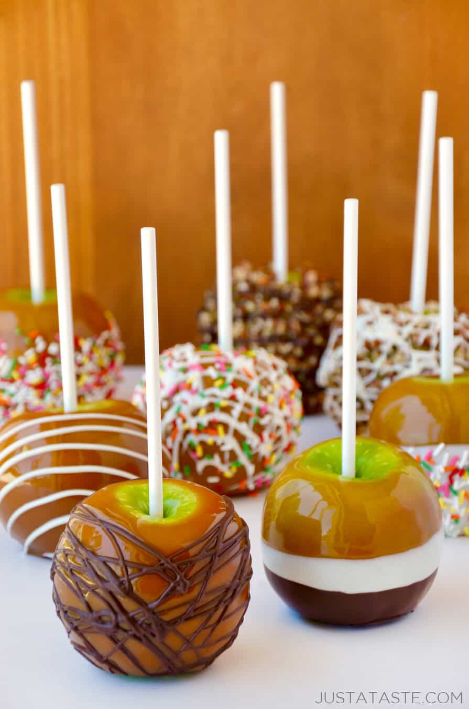

Candied Apples

Description
This recipe is for apples covered in a thin sugar coating, a traditional treat in the Fall.
Ingredients
- 30 small apples
- 5 cups white sugar
- 1/2 cup golden syrup
- 1 1/2 cups mineral water
- 2 teaspoons black currant syrup
Steps
- Place wooden sticks into each apple on the stem side.
- In a heavy saucepan, mix together the water, sugar, and golden syrup. Bring to a boil, then reduce the heat to medium.
- Remove the sugar mixture from the heat. Stir in the black currant syrup and dip all of the apples.